📑 Tabla de Contenidos
🏥1. Introducción
NexaMed es un sistema de gestión clínica diseñado para facilitar el manejo de pacientes, consultas, citas y órdenes médicas en consultorios y clínicas médicas. Desarrollado específicamente para el sector salud venezolano, ofrece una interfaz intuitiva y completa para la gestión médica diaria.
URL:
https://nexamed.up.railway.appCredenciales: Proporcionadas por el administrador del sistema
Navegadores recomendados: Chrome, Firefox, Edge (últimas versiones)
🔐2. Primer Inicio de Sesión
2.1 Pantalla de Login
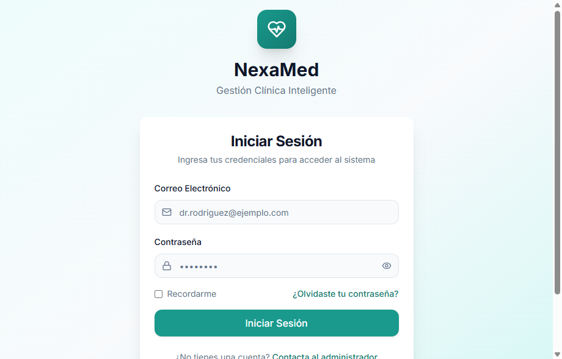
Pantalla de inicio de sesión de NexaMed con diseño moderno
Al acceder al sistema, verá la pantalla de inicio de sesión con el logo de NexaMed y los campos para ingresar sus credenciales.
- Ingrese su correo electrónico en el campo "Email"
- Ingrese su contraseña en el campo "Contraseña"
- Haga clic en el botón "Iniciar Sesión"
📊3. Dashboard Principal
3.1 Vista General
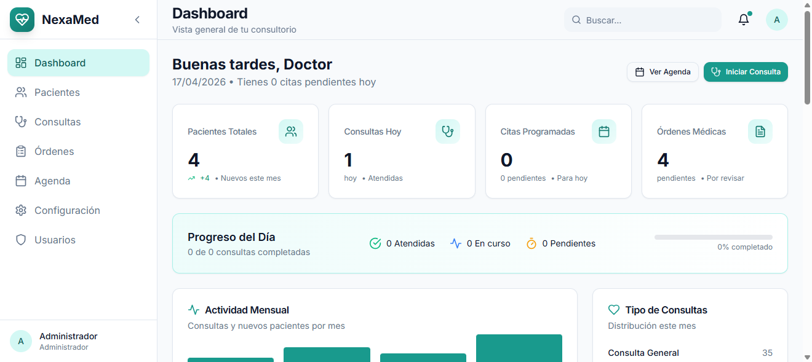
Dashboard principal con estadísticas en tiempo real y actividad reciente
El Dashboard es la pantalla principal que se muestra después de iniciar sesión. Proporciona un resumen completo de la actividad del consultorio en tiempo real.
| Tarjeta | Descripción | Acción |
|---|---|---|
| Total Pacientes | Número total de pacientes registrados | Clic para ver lista completa |
| Consultas Hoy | Consultas programadas para el día actual | Clic para ver detalles |
| Citas Pendientes | Citas que requieren confirmación | Clic para gestionar |
| Órdenes Activas | Órdenes médicas pendientes | Clic para revisar |
👥4. Gestión de Pacientes
4.1 Lista de Pacientes
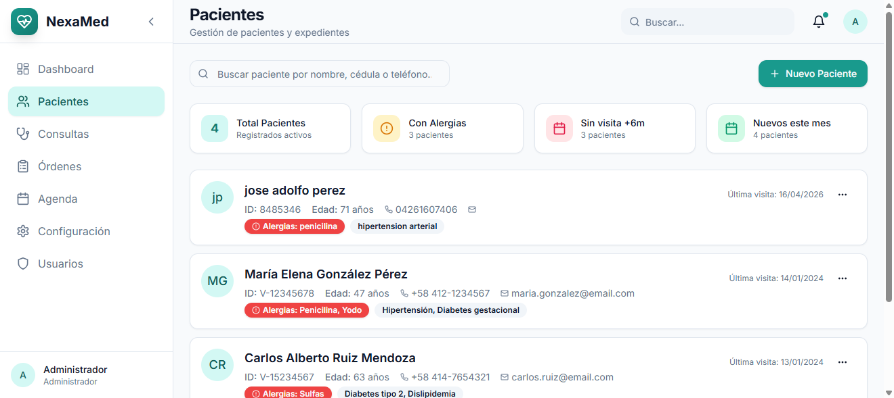
Lista completa de pacientes con opciones de búsqueda y filtros
La vista de pacientes muestra todos los pacientes registrados en el sistema con información organizada y accesible.
Funciones disponibles:
- 🔍Buscador: Encuentre pacientes por nombre, apellido o cédula
- ➕Nuevo Paciente: Botón verde superior para registrar un nuevo paciente
- 👁️Ver: Icono de ojo para ver detalles completos
- ✏️Editar: Icono de lápiz para modificar información
- 🗑️Eliminar: Icono de basura para eliminar (requiere confirmación)
4.2 Crear Nuevo Paciente
El formulario de creación está organizado en 4 pestañas para facilitar el registro paso a paso:
Pestaña 1: Información Personal
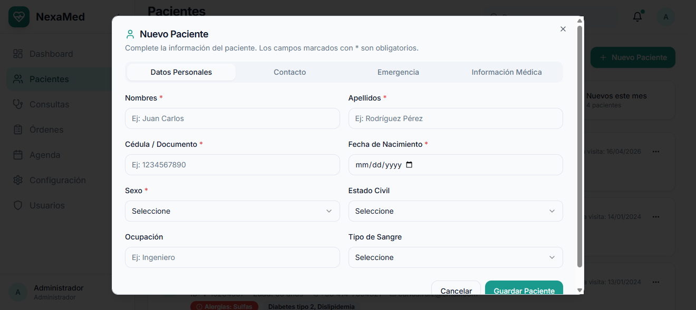
Formulario de información personal del paciente
Campos obligatorios:
- ✅ Nombres
- ✅ Apellidos
- ✅ Cédula de Identidad
- ✅ Fecha de Nacimiento (use el selector de fecha)
- ✅ Sexo (Masculino/Femenino)
Pestaña 2: Contacto
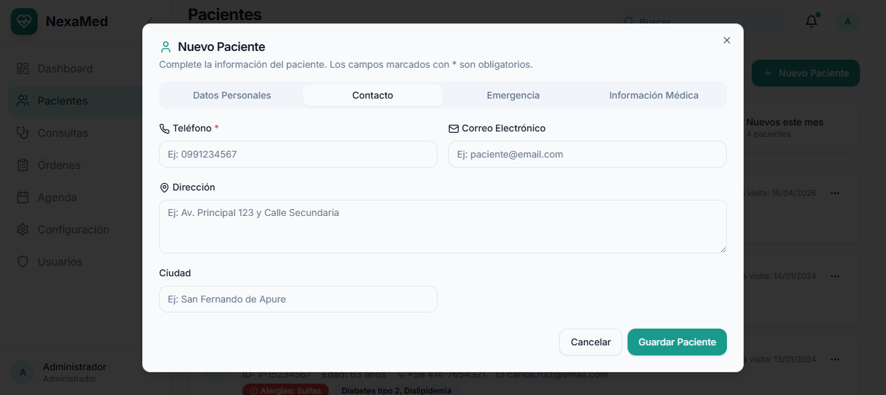
Formulario de datos de contacto del paciente
Pestaña 3: Información Médica
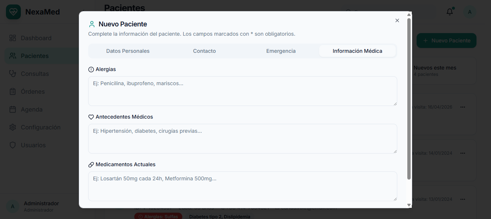
Formulario de información médica y clínica
Pestaña 4: Contacto de Emergencia
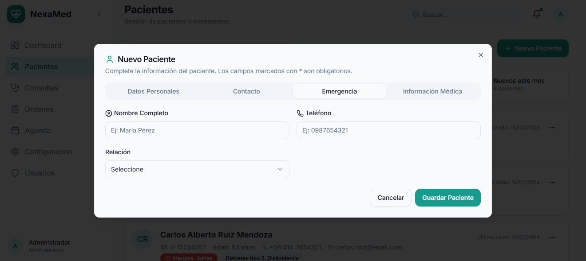
Formulario de contacto de emergencia
- Complete todos los campos obligatorios en cada pestaña
- Use los botones "Anterior" y "Siguiente" para navegar
- En la última pestaña, haga clic en "Guardar Paciente"
4.3 Ver Detalles del Paciente
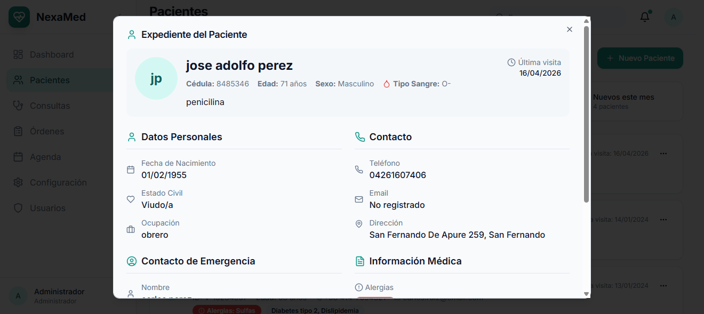
Vista detallada de toda la información del paciente
4.4 Editar Paciente
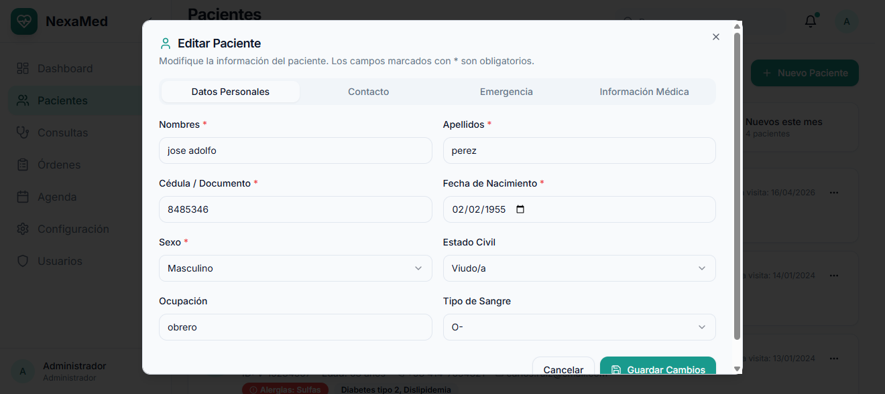
Modal de edición con datos prellenados
4.5 Eliminar Paciente
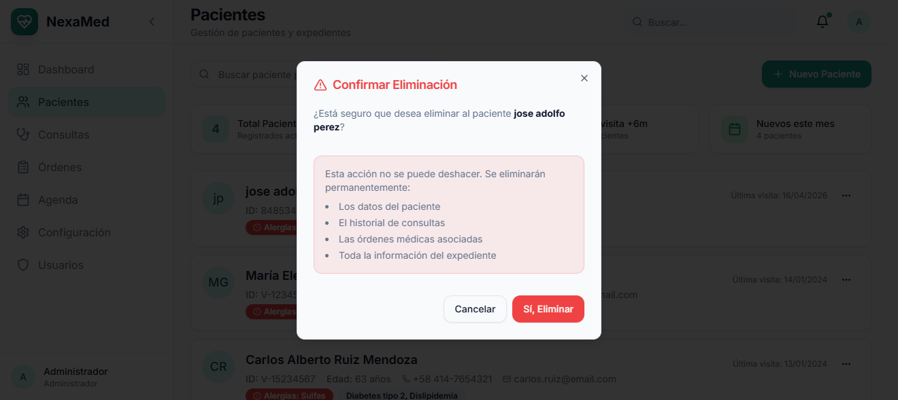
Confirmación antes de eliminar un paciente
📁5. Expediente Clínico
5.1 Vista del Expediente
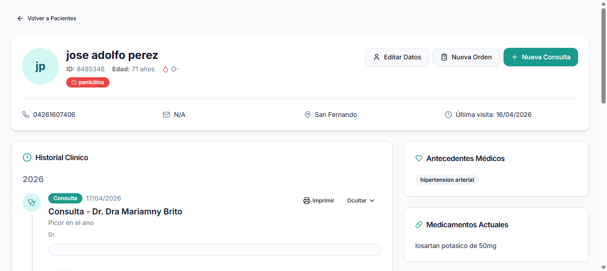
Expediente clínico completo con timeline de consultas
El expediente clínico es el corazón del sistema. Muestra el historial completo del paciente de forma organizada y cronológica.
Estructura del expediente:
- Información del Paciente (parte superior): Nombre, cédula, edad, tipo de sangre y alergias destacadas
- Acciones Rápidas: Botones para nueva consulta, nueva orden o editar paciente
- Timeline de Consultas: Lista cronológica de todas las consultas con fecha, motivo y médico
- Órdenes Médicas: Historial de órdenes generadas con su estado
🩺6. Consultas Médicas
6.1 Nueva Consulta (Formato SOAP)
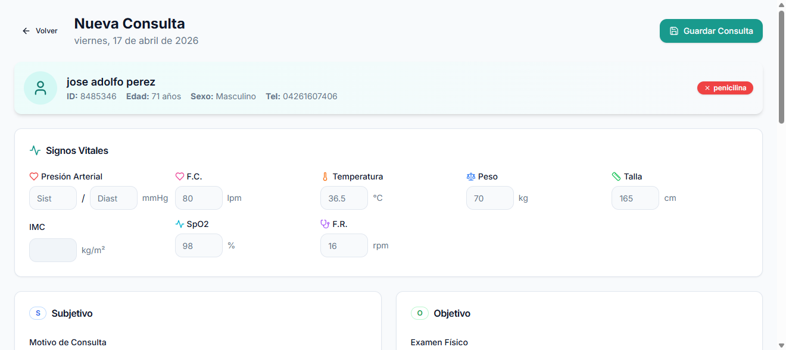
Formulario de consulta médica con formato SOAP completo
El sistema utiliza el formato SOAP estándar internacional para el registro de consultas médicas.
| Sección | Campo | Descripción |
|---|---|---|
| S | Subjetivo | Síntomas que el paciente refiere |
| O | Objetivo | Hallazgos del examen físico |
| A | Análisis | Diagnóstico presuntivo o definitivo |
| P | Plan | Tratamiento, recetas, indicaciones |
6.2 Imprimir Consulta
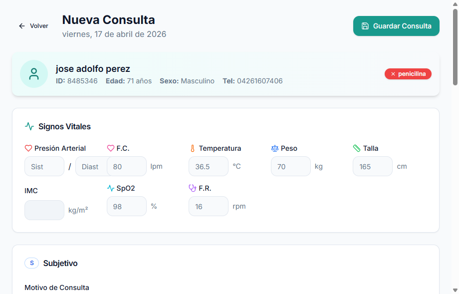
Vista previa de impresión del informe médico
- Haga clic en el botón "Imprimir" (esquina superior derecha)
- Use la función de impresión del navegador (Ctrl+P)
- Seleccione "Guardar como PDF" si desea archivo digital
📋7. Órdenes Médicas
El sistema permite crear tres tipos de órdenes médicas:
- 🧪Laboratorio: Exámenes de sangre, orina, química sanguínea, etc.
- 🔬Imagenología: Rayos X, ultrasonido, tomografías, resonancias
- 👨⚕️Interconsulta: Derivación a otras especialidades médicas
7.1 Crear Nueva Orden
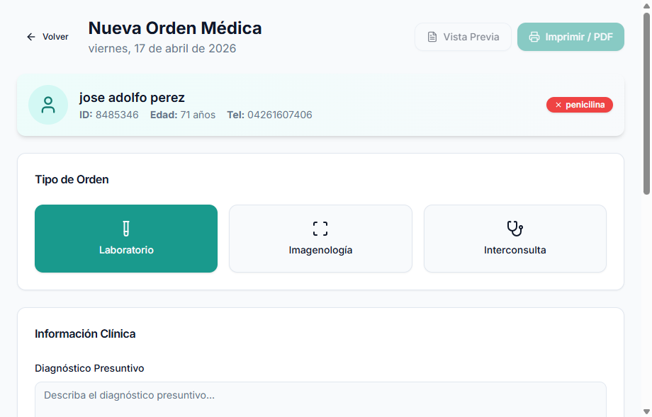
Formulario de creación de orden médica con selección de exámenes
- Seleccione el Tipo de Orden: Laboratorio, Imagenología o Interconsulta
- Complete la Información Clínica: Diagnóstico presuntivo, prioridad (Normal/Urgente), observaciones
- Seleccione los Exámenes: Use el buscador y haga clic para agregar
- Revise la Vista Previa: Verifique diagnóstico y exámenes seleccionados
- Guarde la Orden: Haga clic en "Guardar Orden" o "Imprimir / PDF"
7.2 Imprimir Orden
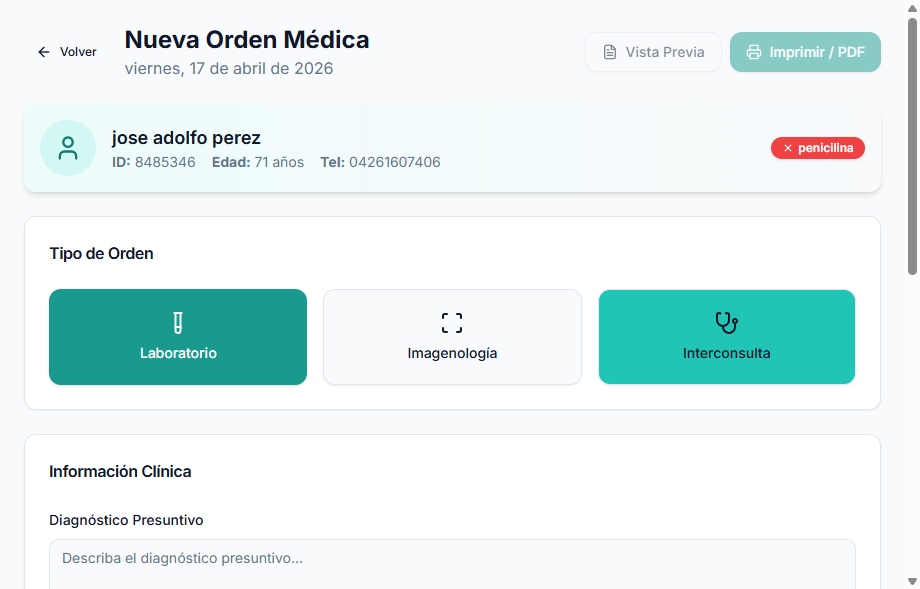
Vista de impresión de orden médica con datos del consultorio
📅8. Agenda y Citas
8.1 Vista del Calendario
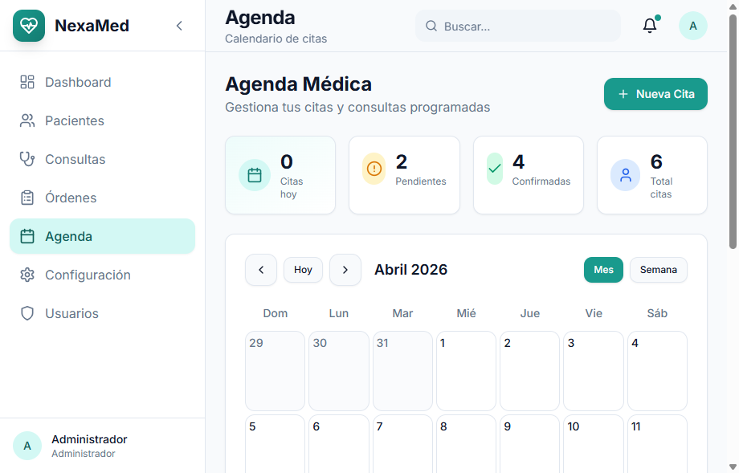
Calendario interactivo con citas programadas
Vistas disponibles:
- Mes: Vista general del mes completo
- Semana: Detalle de la semana seleccionada
- Día: Agenda hora por hora
8.2 Crear Nueva Cita
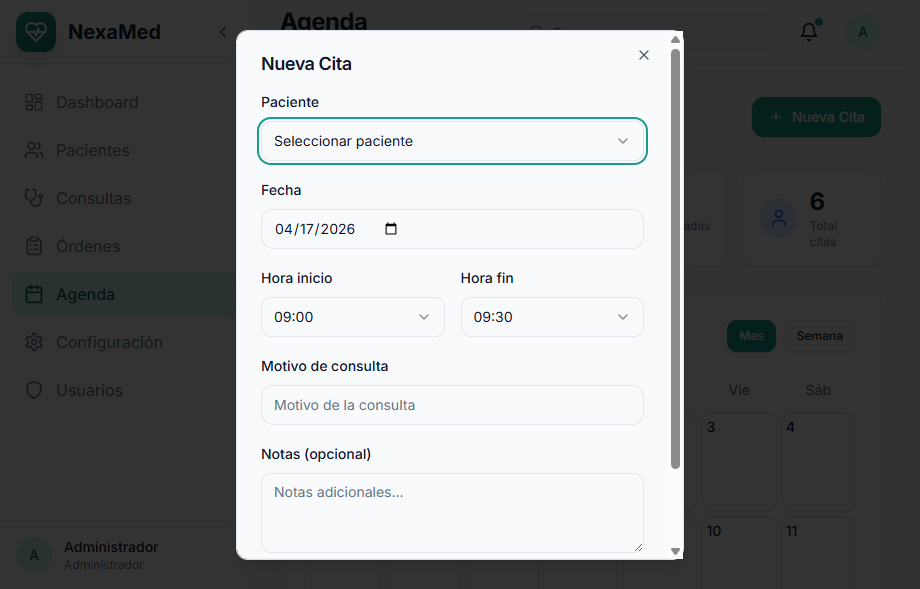
Formulario de programación de nueva cita médica
| Estado | Color | Descripción |
|---|---|---|
| Pendiente | 🟡 Amarillo | Cita programada, esperando confirmación |
| Confirmada | 🟢 Verde | Paciente confirmó asistencia |
| Completada | 🔵 Azul | Consulta realizada exitosamente |
| Cancelada | 🔴 Rojo | Cita cancelada |
⚙️9. Configuración
9.1 Perfil del Usuario
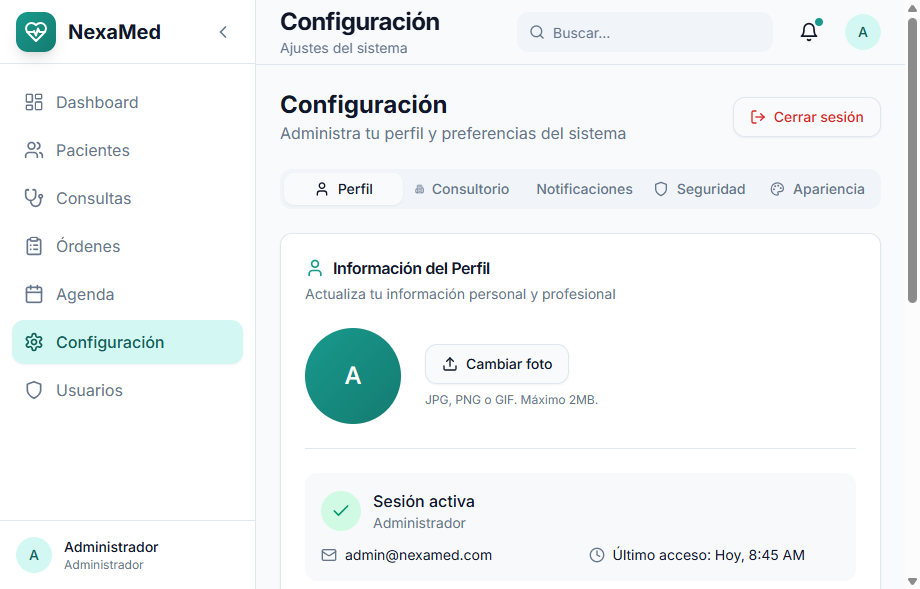
Configuración del perfil de usuario médico
Datos que puede modificar:
- Nombre completo
- Correo electrónico
- Teléfono profesional
- Especialidad médica
- Número de registro médico
- Biografía profesional
9.2 Información del Consultorio
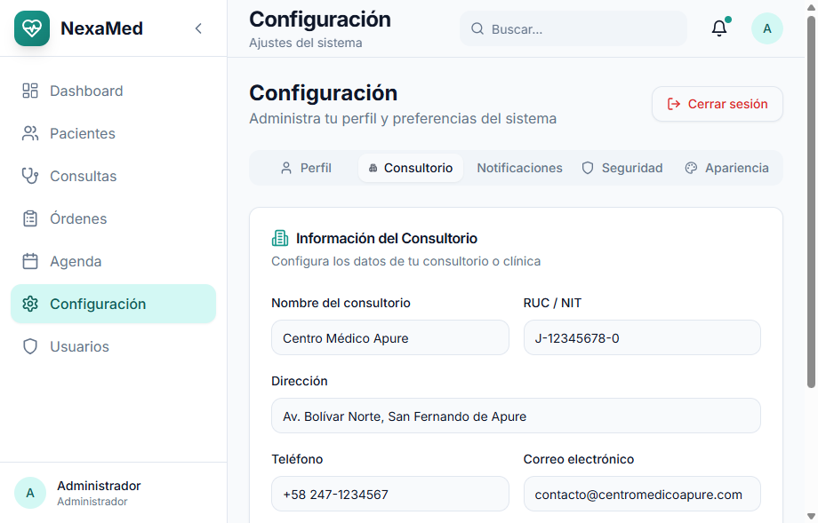
Configuración de datos del consultorio para documentos impresos
9.3 Cambiar Contraseña
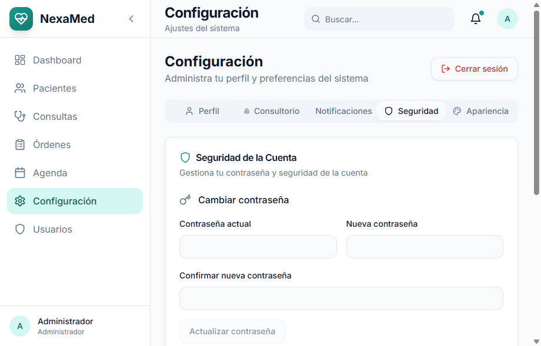
Formulario seguro de cambio de contraseña
👤10. Gestión de Usuarios (Solo Administrador)
10.1 Lista de Usuarios
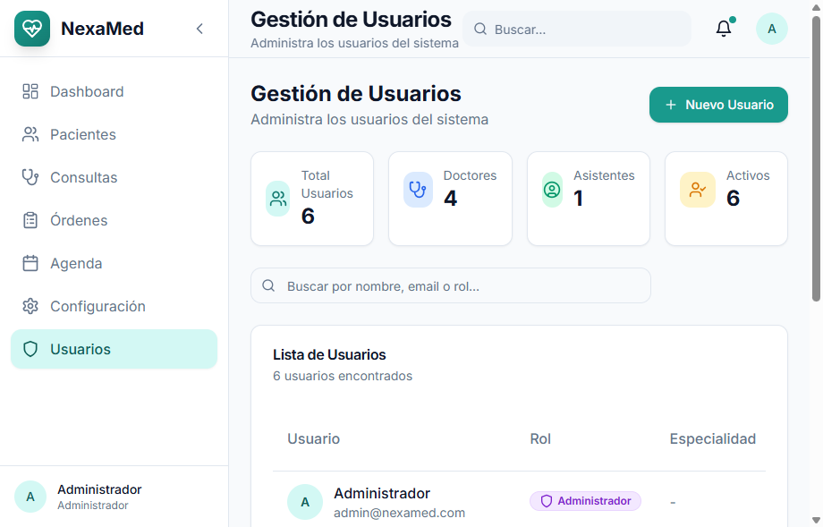
Panel de administración de usuarios del sistema
El administrador tiene acceso completo para gestionar el personal del consultorio.
| Rol | Permisos | Uso recomendado |
|---|---|---|
| Administrador | Acceso total a todas las funciones | Gerentes, dueños del consultorio |
| Doctor | Pacientes, consultas, órdenes, agenda | Médicos tratantes |
| Asistente | Pacientes, agenda, ver consultas (solo lectura) | Recepcionistas, asistentes médicos |
💡11. Consejos y Buenas Prácticas
🚀 Navegación Eficiente
- Use el buscador global para encontrar pacientes rápidamente
- Los accesos directos en el Dashboard llevan a las funciones más usadas
- Atajos de teclado: Esc para cerrar modales
👥 Gestión de Pacientes
- Mantenga actualizada la información de contacto
- Registre alergias y antecedentes de forma completa
- Use el contacto de emergencia para casos urgentes
🩺 Consultas Médicas
- Complete todos los campos SOAP para un mejor seguimiento
- Los signos vitales son obligatorios para estadísticas
- Use el plan de tratamiento detallado para recetas claras
📞12. Soporte Técnico
📧 Contacto
Email: soporte@nexamed.com
Teléfono: +58 247-1234567
WhatsApp: +58 412-9876543
Horario de Atención
Lunes a Viernes: 8:00 AM - 5:00 PM
Sábados: 9:00 AM - 1:00 PM
Emergencias: 24/7 (solo problemas críticos)
Resumen de Accesos Rápidos
| Función | Ruta de Acceso |
|---|---|
| Dashboard | Menú principal |
| Lista de Pacientes | Menú lateral → Pacientes |
| Nueva Consulta | Expediente → "Nueva Consulta" |
| Nueva Orden | Expediente → "Nueva Orden" |
| Agenda | Menú lateral → Agenda |
| Configuración | Menú lateral → Configuración |